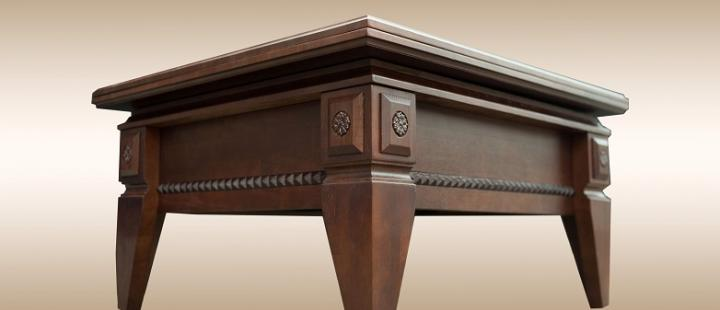

Описание товара
Дельфин АСМ Мебель
Подробное описание товара
Изделие преобразуется за счет подъемного механизма. Рабочая поверхность увеличивается вдвое в высоту и длину. Столешница состоит из двух частей, наложенных друг на друга, а для обеденного варианта аккуратно трансформируется.
Миниатюрный журнальный стол превращается в обеденный. Дополнительным удобным оснащением считается полка под крышкой стола.
Характеристики товара
-
Фабрика изготовления АСМ
- Толщина корпуса и столешницы 22 мм
- Кромка ПВХ толщиной 2 мм
- Материал ЛДСП
- Рама металл
- Габариты сложенного изделия 900/800/432 мм
- Разложенные размеры 1800/800/730 мм
- Высота от пола 45 см (сложенный), 76 см (разложенный)
- Цвет: ясень шимо теплый и светлый, темный венге
- Вместительность 10 человек
- Размер упаковки 90,2/80,2/23,6 см
- Сертифицирован РСТ
- Вес 50 кг
- Страна-производитель Россия
Назад
Описание товара
Цезарь Лидер Массив

Подобное описание товара
Отличие данного стола – яркий итальянский дизайн классического исполнения, необычная резьба на ножках старинного стиля. Изделие становится украшением помещения, одинаково красивым в сложенном и разложенном виде.
Характеристики товара
-
Тип журнально-обеденный
- Толщина корпуса и столешницы 22 мм
- Кромка ПВХ толщиной 2 мм
- Материал ЛДСП
- Рама металл
- Габариты сложенного изделия 900/800/432 мм
- Разложенные размеры 1800/800/730 мм
- Высота от пола 45 см (сложенный), 76 см (разложенный)
- Цвет: ясень шимо теплый и светлый, темный венге
- Вместительность 10 человек
- Размер упаковки 90,2/80,2/23,6 см
- Сертифицирован РСТ
- Вес 50 кг
- Страна-производитель Россия.
Назад
Все права защищены